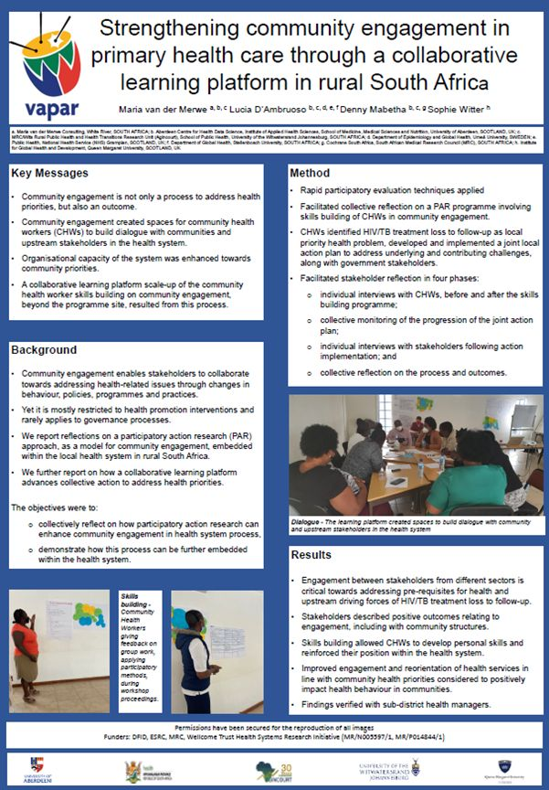

News · November 2022
VAPAR at the 7th Global Symposium on Health Systems Research

Professor Sophie Witter facilitated an organised session on “Sharing experiential learning from health policy and system research learning sites in diverse settings — how to manage the challenges and maximise the benefits” under the symposium sub-theme on intersectoral collaboration and integrative governance. Maria van der Merwe participated as a panellist, sharing learning for health system strengthening.
Under the sub-theme “Systems performance in the political agenda”, Maria van der Merwe presented a poster titled “Strengthening community engagement in primary health care through a collaborative learning platform in rural South Africa”.